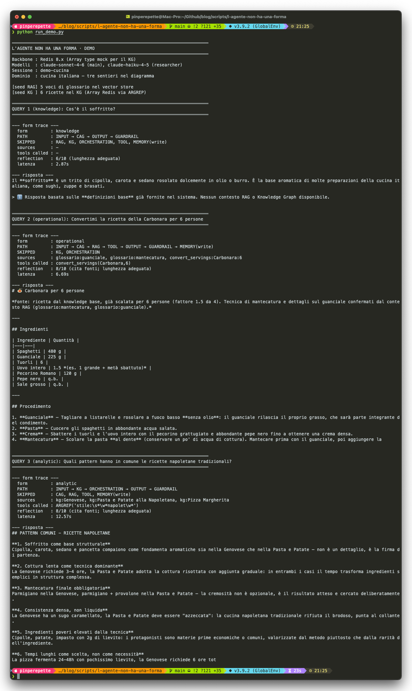

Se anche tu ti sei messo a studiare gli agenti sul serio, te ne sei accorto: non ci stai dietro. Esce un paper la mattina, una libreria il pomeriggio, un benchmark che ribalta tutto la sera. Io di anni ne ho cinquanta. A trenta non ero sveglissimo, ma il modello mentale lo rifacevi in un weekend; adesso te ne servono tre, e qualcosa per strada lo perdi comunque.
Quello che leggi qui e' solo quello che ho capito io a grandi linee, dopo essermi fatto male N volte. Ci sono dentro gli errori che ho fatto, le pipeline che ho dovuto smontare e rismontare, e qualche cosa che mi fa ancora dire 'oh la madonna'. Una di queste e' la PR di antirez sull'Array, e' un salto di pensiero: la knowledge base smette di essere un file su disco e diventa una struttura Redis nativa, interrogabile con regex, condivisa fra una moltitudine di agenti remoti. Se trovi qualcosa di sbagliato, scrivimi.
// La Finzione
Sezione 1. Quello che vedi non e' quello che c'e'Iola descriveva ARPANET nel 1965. Stessa frase, oggi, descrive un agente AI.
Quando interagisci con un sistema agentico hai l'impressione di una mente continua. Una cosa che ricorda, decide, agisce. Sotto, non c'e' niente di tutto questo. C'e' un LLM stateless che riceve un prompt e produce token, una memoria che e' un database, una catena di tool call che potrebbero fallire ad ogni passo. Ogni invocazione e' un pacchetto: o passa il checksum (la reflection, i guardrail, la validazione del JSON) o viene scartata.
L'agente non e' un'entita' coerente. E' una finzione di continuita' su pacchetti discreti. La differenza con la rete di Iola e' solo che qui l'illusione e' piu' giovane, e quindi piu' fragile.
// La Tesi
Sezione 2. Non esiste l'architettura perfettaNon esiste la struttura perfetta.
Esiste quella giusta per quello che devi fare.
Apri un articolo qualsiasi su "agentic architecture" e trovi il diagramma a sette scatole: input, contesto, orchestrazione, tool, output, guardrail, memoria. Ogni scatola con i suoi sottoblocchi. Ogni freccia dipinta come se non fosse opzionale. Il messaggio implicito: questa e' la forma corretta dell'agente.
Falso. Quella e' la forma massima. Un agente che ha bisogno di tutti e sette i layer e' un agente che fa molte cose diverse. La maggior parte degli agenti reali ne usa quattro o cinque, e il taglio non e' arbitrario: dipende dal compito.
Un helpdesk aziendale che risponde a domande sulla policy ferie non ha bisogno di multi-agent, planner, knowledge graph e RAG distribuito. Ha bisogno di un loop semplice + un vector DB sui documenti HR + un guardrail su PII in uscita. Cinque layer su sette, e il quinto solo perche' il legale lo richiede. Aggiungere il sesto layer non lo rende piu' intelligente: lo rende piu' fragile.
Un copilota che gestisce trading, ticket, escalation e analisi di portafoglio invece ha bisogno di tutti e sette. Senza orchestrazione multi-agent perde i ruoli. Senza memoria a lungo termine non impara dai casi precedenti. Senza guardrail finisce in tribunale.
Stesso vocabolario, due architetture diverse. Il punto non e' "ho usato tutti i layer". Il punto e' "ho scelto i layer giusti".
// I Sette Layer
Sezione 3. Cosa fa ogni layer e quando servePrima di parlare di forme, serve sapere quali sono le forme possibili. Sette layer, ognuno con un ruolo distinto.
Un agente "completo" usa tutti e sette. Un agente "minimo" puo' funzionare con tre: input, orchestrazione, tool. Tutto il resto e' optional. Il design consiste nel decidere quali optional valgono il loro costo per il tuo caso.
// Il Diagramma Mente
Sezione 4. Le frecce non sono obbligatorieTorna al diagramma in cima a questo articolo (o a quello che ti viene in mente quando pensi a "agentic architecture"). Sembra una pipeline fissa: input → contesto → orchestrazione → tool → output → guardrail → memoria. Sequenza ordinata, frecce piene, ogni passo collegato al successivo.
Sembra una pipeline fissa. Non lo e'.
Quasi nessuna richiesta reale attraversa tutti i layer. La maggior parte ne tocca tre, a volte quattro. Il diagramma e' la lista completa dei pezzi che potresti usare; l'esecuzione e' la scelta dei pezzi che usi per quella query.
Tre esempi concreti. Lo stesso agente, lo stesso pool di sette layer disponibili. Tre query diverse, tre sentieri diversi:
Input → CAG → Output
Input → CAG → Tool → Output → Memoria
Input → RAG → KG → Orchestrazione → Output
Il diagramma e' completo. L'esecuzione e' selettiva.
Le frecce non sono obbligatorie. Sono possibilita'.
Cambia il modo di leggere il resto dell'articolo. La domanda non e' "quale architettura monto?". E' "per ciascun tipo di query, quale sentiero seguo nel grafo dei layer disponibili?". I quattro casi della prossima sezione sono quattro sentieri ricorrenti, non quattro architetture rivali.
Il lab di questo articolo dimostra esattamente questo punto. Stesso agente, tre query, tre path stampati a video durante l'esecuzione. La query 1 attraversa tre layer, la query 2 cinque, la query 3 quattro, ma combinazioni diverse, non sottoinsiemi annidati. Vedi che layer si attivano e quali no, riga per riga, mentre il sistema risponde.
// Quattro Forme
Sezione 5. Lo stesso vocabolario, quattro architettureQuattro casi reali. Stessi sette layer disponibili, quattro selezioni diverse. Ognuna ha la sua logica.
documentazione, FAQ, manuali
⊕ RAG su corpus interno
⊕ Tool leggeri
⊕ Memoria minima (sessione + vector DB)
L'obiettivo e' recuperare informazioni affidabili e rispondere in modo coerente. Multi-agent qui e' overhead. Il KG aggiunge complessita' senza valore: i documenti hanno gia' la loro struttura.
automazioni, trading, pipeline
⊕ Memoria veloce (Redis)
⊕ Tool forti (API, DB, esecuzioni)
⊕ Poco o nessun RAG
Servono controllo, determinismo, bassa latenza. Il contesto e' stabile e prevedibile (numeri, stati, regole). Il RAG semantico introduce ambiguita' dove serve precisione. Ogni millisecondo conta.
OSINT, intelligence, research
⊕ Multi-agent (ricercatore, analista, redattore)
⊕ Planner
⊕ Tool avanzati (scraping, API specializzate)
Le relazioni fra entita' contano: serve reasoning multi-hop e collegamenti fra informazioni. Singolo agente fallisce sulla pianificazione. Il KG diventa la struttura portante, non un accessorio.
assistente trasversale
⊕ RAG + memoria a lungo termine
⊕ Multi-agent + tool + cache
⊕ Layer di valutazione serio
Ambiente dinamico, compiti eterogenei, richieste imprevedibili. Servono coordinazione, affidabilita' e continuita' nel tempo. Qui i sette layer servono davvero. Tagliarne uno e' una scelta deliberata, non una semplificazione.
Quattro casi, quattro architetture, zero coincidenze. Il RAG che e' indispensabile nel caso 1 diventa zavorra nel caso 2. Il multi-agent che e' overkill nel caso 1 e' essenziale nel caso 3. Il knowledge graph che fa la differenza nel caso 3 non aggiunge nulla nel caso 1.
L'errore comune e' partire dall'architettura. Si parte sempre dal compito. L'architettura e' un effetto collaterale.
// Sei Principi
Sezione 6. Le regole che si pagano se ignorateIndipendentemente dalla forma, sei principi resistono al cambio di scenario. Non sono best practice, considerale il prezzo del primo incidente. Se li ignori paghi.
| Principio | Cosa significa | Cosa succede se lo ignori |
|---|---|---|
| 1. Separa i layer | Modulare = scalabile e manutenibile | Cambiare il prompt rompe il retrieval. Cambiare il vector DB rompe la reflection. |
| 2. Il contesto e' tutto | Meglio poco e rilevante che tanto e rumoroso | Allucinazioni mascherate da contenuto pertinente. Il LLM cita rumore con sicurezza. |
| 3. La memoria e' potere | Senza memoria, l'agente e' amnesico | Ogni sessione riparte da zero. L'utente lo nota al terzo turno. |
| 4. Tools > parole | Gli agenti diventano utili quando possono agire | L'agente "spiega" invece di "fare". Demo brillante, ROI zero. |
| 5. Valutare sempre | Senza controllo si sbaglia in modo sicuro e ripetibile | Errori che si propagano per mesi prima di essere visti. |
| 6. Iterare e osservare | Log, metriche, feedback umano | Sai che qualcosa non funziona ma non sai cosa, ne' dove, ne' quando. |
Sono regole noiose. Vengono violate sistematicamente, anche da team senior, perche' il primo demo che funziona sembra non averne bisogno. Ne hanno bisogno al terzo mese in produzione.
// Maggio 2026: Antirez Cambia Una Tessera
Sezione 7. Il nuovo Array type di Redis e perche' c'entra con gli agentiIl 3 maggio 2026 Salvatore Sanfilippo (antirez, l'autore originale di Redis) pubblica un post: il nuovo tipo di dato Array per Redis e' pronto, dopo quattro mesi di sviluppo iniziati a gennaio. PR #15162. Spec scritta a mano, poi affinata con Opus, poi GPT-5.x, poi revisione riga per riga.
Il dettaglio rilevante per chi costruisce agenti non e' il tipo in se', e' la combinazione di tre cose:
Sparse representation. ARSET myarray 293842948324 foo non alloca trentuno gigabyte. La struttura interna e' una "super-directory di directory sliced dense" con slice di 4096 elementi. Indici giganti, memoria proporzionale a quello che usi davvero.
ARGREP server-side. Ricerca con regex (libreria TRE), MATCH/GLOB/EXACT/RE, predicati multipli con AND/OR. La feature nasce per supportare la ricerca dentro file Markdown immagazzinati in array Redis. Esattamente il caso d'uso del knowledge layer di un agente.
ARSCAN proporzionale. Scan in tempo proporzionale agli elementi popolati, non al range. Su un array sparso con dieci elementi su un indice da miliardi, lo scan e' istantaneo.
Tradotto in linguaggio agentico: il knowledge layer dell'articolo precedente, che era un vault Obsidian su filesystem locale, diventa una struttura Redis nativa interrogabile lato server con regex, dentro lo stesso processo che gia' tiene la memoria a breve termine, la cache di sessione, e (con Vector Sets) il RAG. Un solo backend per quattro layer.
Su X, lo stesso giorno del post, antirez chiarisce la cornice in un thread di quattro tweet. La parte importante non e' il tipo di dato, e' come cambia la forma del knowledge layer di un agente:
KEYS o ARGREP-pando un indice, e poi possono ARGREP skill.md - + RE foo|bar|zap e cosi' via.
antirez, X, 3 maggio 2026
Tre cose, in ordine. Primo: i documenti che l'agente legge non sono file su disco. Sono chiavi Redis, accessibili in rete, non sequenziali rispetto alla CPU dell'agente. Cambia la topologia: niente filesystem condiviso, niente sync. Secondo: il pattern di accesso e' KEYS per scoprire l'indice + ARGREP per filtrare il singolo documento. Discovery e retrieval su due livelli, entrambi server-side. Terzo: gli agenti sono una moltitudine. Concorrenti, distribuiti, magari di fornitori diversi, che leggono e aggiornano collettivamente lo stesso set di skill.
Questo punto vale piu' del comando in se'. Il knowledge graph dell'articolo precedente era locale: un vault per agente. Bene per un single agent in cloud o per un assistente personale, scomodo per qualunque scenario multi-agente. Antirez sta dicendo che con l'Array type Redis diventa una memoria collettiva interrogabile: l'equivalente per gli agenti di quello che il filesystem e' per i processi Unix, ma con regex server-side e accesso remoto.
Antirez stesso, nel post, e' onesto sul punto: il PR e' aperto, non ancora merged. Ma la direzione che traccia e' chiara, e si vede gia' nelle altre parti del progetto. Aprile 2026, sempre dal blog Redis: Long-Term Memory Architectures for AI Agents. Una settimana dopo, Redis Agent Memory Server in alpha. Il messaggio e' coerente: Redis non vuole essere "anche utile" per gli agenti, vuole essere il backbone di default.
Una nota di metodo. Antirez racconta apertamente di aver usato AI-assisted programming per scrivere il PR (Opus per il design, GPT-5.x e Codex per l'implementazione). Non e' un dettaglio di colore. Lui scrive: "per system programming ad alta qualita' occorre restare pienamente coinvolti". Il modello giusto non e' "l'AI scrive il codice". E' "l'AI fornisce la rete di sicurezza per gestire complessita' che altrimenti avrei evitato". Stessa filosofia che usiamo per costruire un agente che fa security: non sostituisce l'analista, gli toglie il carico ripetitivo.
// Perche' Redis Diventa Il Backbone
Sezione 8. Un solo processo, sette ruoliL'argomento "usa Redis come backbone agentico" non e' marketing: e' una constatazione architetturale. Guarda l'immagine dei sette layer e contali quanti ne tocca un Redis 8.x ben configurato.
| Layer | Funzione Redis | Latenza tipica |
|---|---|---|
| Memoria a breve termine | Hash + TTL per sessione, cronologia, task state | < 1 ms |
| Memoria a lungo termine (vettoriale) | Vector Set (HNSW, AVX2/AVX512 dot product) | ~5-20 ms su milioni di vettori |
| Knowledge layer (note, regex) | Array type + ARGREP (in arrivo, PR #15162) | O(elementi popolati) |
| Cache / stato condiviso | String + TTL, Hash partizionati | < 1 ms |
| Stream eventi (pub/sub multi-agent) | Streams (XADD/XREAD/XACK) | < 5 ms |
| Hybrid search (RAG + filtri) | FT.HYBRID (Redis 8.4+) | parallel I/O, ~4.7x throughput |
| Semantic cache (LLM-level) | LangCache (preview) | ~ms (hit), risparmia token |
Un solo processo, sette ruoli. Non significa "fai tutto con Redis". Significa che la linea di taglio tra cosa tenere in Redis e cosa spostare altrove e' molto piu' alta di quanto sembri. Per la maggior parte degli agenti reali, "Redis + un LLM" copre i sette layer. Postgres, Neo4j, Pinecone diventano necessari solo quando il caso lo richiede davvero.
Onestamente: funziona finche' i vincoli restano gestibili. Quando la scala cresce, quando servono join complessi su entita' eterogenee, quando le query analitiche multi-hop diventano la norma e non l'eccezione, Redis come backbone unico inizia a stridere. Il punto non e' "Redis e' la soluzione finale": e' che il punto di rottura e' molto piu' lontano di quanto la cargo-cult dello stack ML tipica suggerisca. Conviene partire da qui e migrare quando il dolore reale si manifesta, non prima.
La regola e' sempre quella: parti dal compito. Se il caso e' caso 2 (workflow operativo), Redis basta e avanza. Se e' caso 3 (OSINT pesante con reasoning multi-hop su milioni di entita'), serve un graph database vero. Se e' caso 4, dipende dal volume.
// Il Lab: Tre Sentieri Nello Stesso Diagramma
Sezione 9. Un agente di cucina che cambia forma a seconda della queryPer dimostrare il punto della sezione 4 (le frecce sono possibilita', non obbligo) il lab esce volutamente dal dominio della security: un assistente di cucina italiana, costruito su Redis 8 come backbone unico. Cucina perche' tutti capiscono cosa fa: convertire una ricetta per N persone, riconoscere uno stile regionale, trovare pattern fra preparazioni. La tesi e' la stessa indipendentemente dal dominio.
Tre query, tre sentieri reali nel diagramma. Il codice stampa PATH e SKIPPED ad ogni run cosi' lo vedi a occhio.
INPUT → CAG → OUTPUT → GUARDRAIL
SKIPPED
RAG, KG, ORCHESTRATION,
TOOL, MEMORY(write)
La definizione e' nel system prompt CAG. Una sola chiamata LLM, output diretto. Niente retrieval, niente tool, niente memoria persistente.
INPUT → CAG → TOOL
→ OUTPUT → GUARDRAIL → MEMORY
SKIPPED
RAG, KG, ORCHESTRATION
Il routing rileva ricetta + numero di persone. Chiama il tool deterministico convert_servings che parsa gli ingredienti e li scala. Il LLM impagina il risultato, la memoria di sessione registra l'interazione.
INPUT → KG (ARGREP)
→ ORCHESTRATION (multi-agent)
→ OUTPUT → GUARDRAIL
SKIPPED
CAG (verbatim), RAG, TOOL,
MEMORY(write)
Il KG contiene sei ricette. Filtro ARGREP "stile:.*napolet": trova le tre napoletane. Multi-agent: researcher (Haiku) estrae i fatti, analyst (Sonnet) sintetizza i pattern. Niente RAG: il KG e' gia' pieno di contesto.
Tre query, tre sentieri davvero diversi. Non sottoinsiemi annidati: combinazioni differenti. La query 1 attraversa quattro layer, la 2 ne attraversa sei, la 3 cinque, ma il sentiero della 3 non passa per il TOOL della 2, e quello della 2 non tocca KG e ORCHESTRATION della 3. Stesso agente, stesso pool, sentieri distinti.
Il pezzo nuovo che rende efficiente il sentiero analitico e' il modulo redis_array.py: una classe Python che riproduce le semantiche di ARSET/ARGREP/ARINSERT del PR di antirez, ma sopra primitive Redis disponibili oggi (Sorted Set + Hash). L'API e' la stessa che esporra' il PR quando verra' merged. Quando il PR atterra in master, sostituisci la classe con i comandi nativi senza toccare il resto del codice.
| 1 | # redis_array.py: emula ARSET/ARGREP/ARINSERT su Redis 8.x |
| 2 | class RedisArray: |
| 3 | def arset(self, key: str, index: int, value: str): |
| 4 | # sparse: salviamo solo gli indici popolati in un Sorted Set |
| 5 | self.r.zadd(f"{key}:idx", {str(index): index}) |
| 6 | self.r.hset(f"{key}:val", str(index), value) |
| 7 | |
| 8 | def argrep(self, key: str, pattern: str, mode="RE"): |
| 9 | # lato server (mock): regex su tutti i valori popolati |
| 10 | vals = self.r.hgetall(f"{key}:val") |
| 11 | rx = re.compile(pattern) |
| 12 | return [(int(i), v) for i, v in vals.items() if rx.search(v)] |
| 13 | |
| 14 | def arinsert(self, key: str, value: str) -> int: |
| 15 | last = self.r.zrange(f"{key}:idx", -1, -1, withscores=True) |
| 16 | next_idx = int(last[0][1]) + 1 if last else 0 |
| 17 | self.arset(key, next_idx, value) |
| 18 | return next_idx |
Quando lanci python run_demo.py il programma stampa, per ogni query, il PATH effettivo e i layer SALTATI. La verita' di cosa e' stato eseguito, non lo schema teorico.
| 1 | QUERY 1 (knowledge): Cos'è il soffritto? |
| 2 | PATH : INPUT → CAG → OUTPUT → GUARDRAIL |
| 3 | SKIPPED : RAG, KG, ORCHESTRATION, TOOL, MEMORY(write) |
| 4 | |
| 5 | QUERY 2 (operational): Convertimi la Carbonara per 6 persone |
| 6 | PATH : INPUT → CAG → TOOL → OUTPUT → GUARDRAIL → MEMORY(write) |
| 7 | SKIPPED : RAG, KG, ORCHESTRATION |
| 8 | TOOL : convert_servings(Carbonara, 6) |
| 9 | |
| 10 | QUERY 3 (analytic): Pattern delle ricette napoletane? |
| 11 | PATH : INPUT → KG → ORCHESTRATION → OUTPUT → GUARDRAIL |
| 12 | SKIPPED : CAG, RAG, TOOL, MEMORY(write) |
| 13 | KG : ARGREP "stile:\s*napoletana" → 3 ricette |
| 14 | AGENTS : researcher (Haiku) → analyst (Sonnet) |
Vedi la differenza riga per riga: nessuna delle tre query attraversa tutti i layer, nessuna e' un sottoinsieme banale di un'altra. La 2 chiama un tool che la 1 non chiama, la 3 attiva un'orchestrazione multi-agent che la 2 non tocca, la 1 e' un sentiero piatto che le altre non fanno.
Non esistono tre configurazioni. Esiste un solo sistema che, a ogni query, decide quali parti di se' usare.
Stesso codice, stesso processo, stesso pool di componenti. Cambia il sentiero. E' una cosa diversa dall'avere tre agenti specializzati: e' un unico agente che si riconfigura runtime, query per query.

python run_demo.py. Q1 (knowledge): 4 layer, 2.87s. Q2 (operational): 7 layer, tool che scala la Carbonara da 4 a 6 persone con fattore 1.5, 6.69s. Q3 (analytic): 5 layer, ARGREP filtra le 3 napoletane, multi-agent researcher+analyst sintetizza i pattern, 12.57s.// Il Routing
Sezione 10. Chi sceglie il sentieroIl router decide quale sentiero attivare. Volutamente deterministico: zero token bruciati per classificare query banali. Tre segnali, tre euristiche, fallback a knowledge form se nessuna scatta.
| 1 | def decide_form(query: str, mem: Memory) -> Form: |
| 2 | q = query.lower() |
| 3 | |
| 4 | # 1) domanda definitoria → CAG-only |
| 5 | if any(k in q for k in ["cos'e'", "definizione", "spiega"]): |
| 6 | return Form.KNOWLEDGE |
| 7 | |
| 8 | # 2) "pattern", "stile X" + KG popolato → analisi multi-agent |
| 9 | if any(k in q for k in ["pattern", "in comune"]) or detect_style(q): |
| 10 | if mem.kg.size() >= 2: |
| 11 | return Form.ANALYTIC |
| 12 | |
| 13 | # 3) ricetta nota + numero di persone → tool deterministico |
| 14 | if detect_recipe(query) and detect_servings(query): |
| 15 | return Form.OPERATIONAL |
| 16 | |
| 17 | return Form.KNOWLEDGE # default sicuro, costa pochissimo |
Tre regole, niente classifier LLM. Funziona perche' il dominio della cucina ha pattern lessicali stabili: cos'e', per N persone, napoletana, in comune. In un dominio meno strutturato vale la pena aggiungere un fallback a Haiku, ma solo come ultima istanza.
Il piacere di questo approccio e' che la "forma" non e' configurata: emerge. La query 3 e' analitica solo perche' il KG ha gia' due o piu' ricette. Su un'installazione a freddo verrebbe degradata a knowledge. L'agente si adatta a quello che ha.
// Cosa Si Rompe
Sezione 11. Onesti sui limitiIl sistema funziona ma non e' senza punti deboli. Tre, in particolare.
Il PR di antirez non e' merged. ARSET/ARGREP/ARINSERT sono ancora in review. Il lab usa una classe Python che emula le semantiche su Sorted Set + Hash. La latenza sara' diversa quando atterrera' la versione nativa: sicuramente piu' bassa, probabilmente molto. Il codice resta uguale, l'API e' la stessa, ma i numeri di benchmark che vedi adesso non sono quelli che vedrai a merge avvenuto.
Il routing deterministico copre i casi facili. Le tre euristiche del decisore funzionano per il dominio del lab (cucina italiana: ricette note, stili regionali, parole chiave come "pattern" e "per N persone"). Su un dominio diverso vanno reimpostate. Per agenti con migliaia di query/giorno e dominio aperto, l'unica strada e' fine-tuning di un classifier piccolo.
Memoria non e' apprendimento. L'agente ricorda. Non impara nel senso forte: i pesi del LLM non cambiano. Se sbaglia in modo sistematico su un certo tipo di query, lo continua a sbagliare. La reflection alza un alert, la memoria di errori riduce la frequenza, ma il bias di base resta. Senza un loop di fine-tuning vero, "imparare" e' una metafora.
Detto questo: la parte che funziona davvero e' la pulizia del backbone. Un solo Redis per memoria, KG, cache, stream. Quattro layer su un processo. Quando il PR Array atterra, diventano cinque. La latenza scende. Il codice si semplifica. La promessa di antirez sull'AI-assisted programming si vede nella forma del PR stesso: 4000 righe di C ben fatte, 4 mesi di lavoro che senza AI ne sarebbero stati otto, e che senza supervisione sarebbero stati pessimi.
// Tre Articoli, Una Architettura
Sezione 12. Dove ci siamo arrivatiTre pezzi, tre angolazioni dello stesso problema.
| Articolo | Domanda | Risposta |
|---|---|---|
| L'Agente Che Non Inventa | Come si costruisce un agente che non allucina? | Sette layer, meta-controller, RAG + tool + reflection. |
| L'Agente Che Costruisce Conoscenza | Come fa l'agente a imparare nel tempo? | Knowledge graph dinamico tra Memory e CAG, promozione automatica. |
| L'Agente Non Ha Una Forma | Quale architettura scegliere? | Quella giusta per il compito. Sette layer sono il pool, non il template. |
Il primo articolo costruisce. Il secondo aggiunge. Questo dice quando togliere. La progressione naturale di chi prima impara la grammatica completa e poi capisce che lo stile e' decidere cosa non dire.
// L'Agente Ha Dei Percorsi
Sezione 13. Il punto vero, in tre righeTutto quello che hai letto fin qui (sette layer, quattro forme, il diagramma che mente, l'Array di antirez, il lab in cucina, il routing deterministico) converge in una frase sola.
L'agente non ha una forma.
Ha dei percorsi.
Implica un cambio di mestiere per chi progetta sistemi del genere. Tre conseguenze, ognuna piu' importante della precedente:
Questa e' la riformulazione che vale piu' di un anno di paper su agentic architecture. Non e' RAG vs CAG. Non e' single vs multi-agent. Non e' Redis vs Postgres. E' la differenza fra oggetto e processo: l'agente non e' una cosa, e' un comportamento.
// La Memoria Sostituisce I Ricordi
Sezione 14. Iola, di nuovoIola Varga, sul letto d'ospedale, scrive la sua autobiografia. Si interrompe. Pensa: e se quello che ho scritto non corrispondesse a quello che e' successo? Decide di rileggere e correggere. Subito dopo capisce qualcosa di peggio.
Un agente con memoria a lungo termine ha lo stesso problema. Ogni summarization sostituisce un pezzo di contesto originale con una sua compressione. Ogni promozione al CAG decide che certe note rappresentano "l'agente". Ogni decay cancella. Ad ogni passo, la rappresentazione che il sistema ha di se' si allontana un po' da quello che e' davvero successo.
Non e' un bug: e' la condizione necessaria per non saturare. Senza compressione la memoria diventa inutile. Senza decay, anche. Ma significa che la coerenza dell'agente, oltre l'orizzonte breve, e' un'opera narrativa, non un archivio. Bit che diventano 1, bit che diventano 0. Senza pieta'.
La forma giusta dell'agente, in fondo, non e' un grafo di layer. E' il modo in cui scegli quanta corruzione tollerare in cambio di quanta capacita' di rispondere.
Quello che consegni e' uno spazio di possibilita'.
E quello che ricordi non e' quello che e' successo."
Codice: tutto il lab e' in scripts/l-agente-non-ha-una-forma. Prerequisiti: Python 3.10+, Redis 8.x (Docker compose incluso), ANTHROPIC_API_KEY. Quando il PR #15162 di antirez atterra, basta sostituire redis_array.py con i comandi nativi.
Riferimenti.
⊕ antirez.com/news/164: il post che annuncia l'Array type (3 maggio 2026).
⊕ invece.org/iola.html: Tales of Illustrious Computer Scientists, Iola Varga.
⊕ redis.io/blog/long-term-memory-architectures-ai-agents: l'architettura che inquadra il lavoro.
⊕ redis/agent-memory-server: il server di memoria agentica di Redis.